library(tidyverse)
library(easystats)
library(DataExplorer) # nicht vergessen zu installieren
library(ggpubr) # optional
library(ggstatsplot) # optional6 Daten verbildlichen
6.1 Lernsteuerung
6.1.1 Standort im Lernpfad
Abb. Abbildung 1.2 zeigt den Standort dieses Kapitels im Lernpfad und gibt damit einen Überblick über das Thema dieses Kapitels im Kontext aller Kapitel.
6.1.2 Lernziele
- Sie können erläutern, wann und wozu das Visualisieren statistischer Inhalte sinnvoll ist.
- Sie kennen typische Arte von Datendiagrammen.
- Sie können typische Datendiagramme mit R visualisieren.
- Sie können zentrale Ergebnisse aus Datendiagrammen herauslesen.
6.1.3 Benötigte R-Pakete
6.1.4 Benötigte Daten
Zuerst definieren wir den Pfad, wo wir die Daten finden, s. ?lst-mariokart-path.
mariokart_path <- "https://vincentarelbundock.github.io/Rdatasets/csv/openintro/mariokart.csv"Dann importieren wir die Mariokart-Daten:
mariokart <- read.csv(mariokart_path)6.1.5 R-Code zum Copy-Pasten
Sie finden den R-Code für jedes Kapitel hier. \(\square\)
6.1.6 Quiz zum Einstieg
Vielleicht fordert Sie die Lehrkraft zu einem Einstiegsquiz auf, etwas mittels der Plattform antworte.jetzt.1 Alternativ überlegen Sie sich selber 10 Quiz-Aufgaben zum Stoff des letzten Kapitels.
6.1.7 Wozu das alles?
ü•∑ Wir m√ºssen die Galaxis retten, Kermit.
üê∏ Schlock
6.2 Ein Dino sagt mehr als 1000 Worte
Es heißt, ein Bild sage mehr als 1000 Worte. Schon richtig, aber ein Dinosaurier sagt auch mehr als 1000 Worte, s. Abbildung 6.1.2
In Abbildung 6.1 sieht man verschiedene “Bilder”, also Datensätze: etwa einen Dino und einmal einen Kreis. Obwohl die Bilder grundverschiedene sind, sind die zentralen statistischen Kennwerte (praktisch) identisch.
In die gleiche Bresche schlägt “Anscombes Quartett” (Anscombe1973?), s. Abbildung 6.2: Es zeigt vier Datensätze, in denen die zentralen Statistiken fast identisch sind,
also Mittelwerte, Streuungen, Korrelationen. Aber die Streudiagramme sind grundverschieden.3
Anscombes Beispiel zeigt (zugespitzt): Eine Visualisierung enthüllt, was der Statistik (als Kennzahl) verhüllt bleibt.
Wichtig
Statistische Diagramme können Einblicke geben, die sich nicht (leicht) in grundlegenden Statistiken (Kennwerten) abbilden. \(\square\)

Unter visueller Cortex ist sehr leistungsfähig. Wir können ohne Mühe eine große Anzahl an Informationen aufnehmen und parallel verarbeiten. Aus diesem Grund sind Datendiagramme eine effektive und einfache Art, aus Daten Erkenntnisse zu ziehen.
Tipp
Nutzen Sie Datendiagramme umfassend; sie sind einfach zu verstehen und doch sehr mächtig.
6.2.1 Datendiagramm
Ein Datendiagramm (kurz: Diagramm) ist ein Diagramm, das Daten und Statistiken zeigt, mit dem Zweck, Erkenntnisse daraus zu ziehen.
Beispiel 6.1 (Aus der Forschung: Ein aufwändiges (und ansprechendes) Datendiagramm) Hier finden Sie ein Beispiel für ein Datendiagramm, das mit R erzeugt wurde (scherer_seasonal_2019?).
{kind=link}
6.2.2 Ein Bild hat nicht so viele Dimensionen
Abbildung 6.3 zeigt ein Bild mit mehreren (5) Variablen, die jeweils einer “Dimension” entsprechen. Wie man (nicht) sieht, wird es langsam unübersichtlich. Offenbar kann man in einem Bild nicht beliebig viele Variablen sinnvoll reinquetschen. Die “Dimensionalität” eines Diagramms hat ihre Grenzen, vielleicht bei 4-6 Variablen.

Möchten wir den Zusammenhang von vielen Variablen, z.B. mehr als 5, verstehen, kommen wir mit Bildern nicht weiter. Dann brauchen wir andere Werkzeuge: statistics to the rescue.
Hinweis
Bei klaren Zusammenhängen und wenig Variablen braucht man keine (aufwändige) Statistik. Ein Bild (Datendiagramm) ist dann (oft) ausreichend. Man könnte sagen, dass es Statistik nur deshalb gibt, weil unser Auge mit mehr als ca. 4-6 Variablen nicht gleichzeitig umgehen kann.
Übungsaufgabe 6.1 Wie viele Variablen sind in Abbildung 6.3 dargestellt?4
Eine weitere Möglichkeit, mehr Variablen in einem Diagramm unterzubringen, ist, die “Flatlands” zu verlassen, also von 2D auf 3D und/oder auf interaktive Diagramme zu wechseln, s. hier, s. ?fig-3d-earth.5
6.3 Nomenklatur von Datendiagrammen
Tabelle 6.1 zeigt eine – sehr kurze Nomenklatur – an Datendiagrammen.6
| Erkenntnisziel | qualitativ | quantitativ |
|---|---|---|
| Verteilung | Balkendiagramm | Histogramm und Dichtediagramm |
| Zusammenhang | gefülltes Balkendiagramm | Streudiagramm |
| Unterschied | gefülltes Balkendiagramm | Boxplot |
Hinweis
Wir arbeiten hier mit dem Datensatz mariokart. Hilfe bzw. ein Data-Dictionary (Codebook) finden Sie hier.
6.4 Verteilungen verbildlichen
6.4.1 Verteilung: nominale Variable
Definition 6.1 (Verteilung) Eine (Häufigkeits-)Verteilung einer Variablen \(X\) schlüsselt auf, wie häufig jede Ausprägung von \(X\) ist.\(\square\)
Beispiel 6.2 Tabelle 6.2 zeigt die Häufigkeitsverteilung von cond (condition, also der Zustand des Artikels, neu oder gebraucht) aus dem Datensatz mariokart. Die Variable hat 5 Ausprägungen; z.B. kommt die Ausprägung new 59 mal vor.\(\square\)
cond aus dem Datensatz mariokart
| cond | n |
|---|---|
| new | 59 |
| used | 84 |
Zugegeben, das Datendiagramm von cond ist nicht so aufregend, s. Abbildung 6.4. Wie man sieht, besteht so ein Diagramm als Balken, daher heißt es Balkendiagramm7. Man kann so ein Diagramm um 90° drehen; keine Ausrichtung ist unbedingt besser als die andere.
Definition 6.2 (Balkendiagramm) Ein Balkendiagramm eignet sich, um Häufigkeiten darzustellen
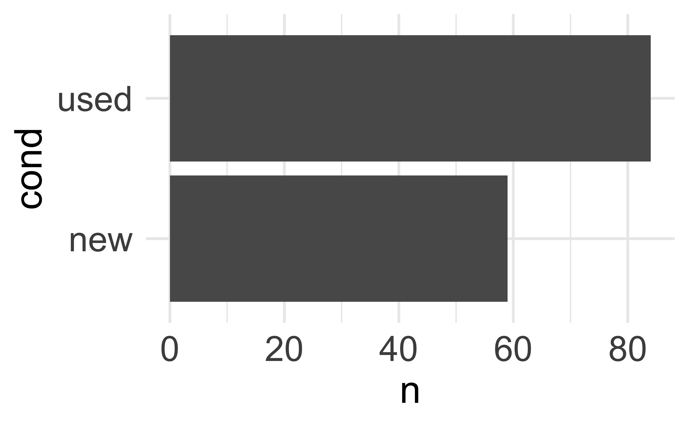
cond

DataExplorer
Es gibt viele Methoden, sich mit R ein Balkendiagramm ausgeben zu lassen. Eine einfache, komfortable ist die mit dem Paket DataExplorer, s. Abbildung 6.5.
Zuerst importieren wir die Daten, s. Listing 6.1 und ?lst-mariokart-path.
mariokart <- read.csv(mariokart_path)Außerdem nicht vergessen, das Paket DataExplorer zu starten, s. Listing 6.2.8 In diesem Paket “wohnen” die Befehle, die wir zum Erstellen der Datendiagramme nutzen werden. Listing 6.3 zeigt die Syntax, um ein Balkendiagramm zu erstellen.9
library(DataExplorer)mariokart %>%
select(cond) %>%
plot_bar()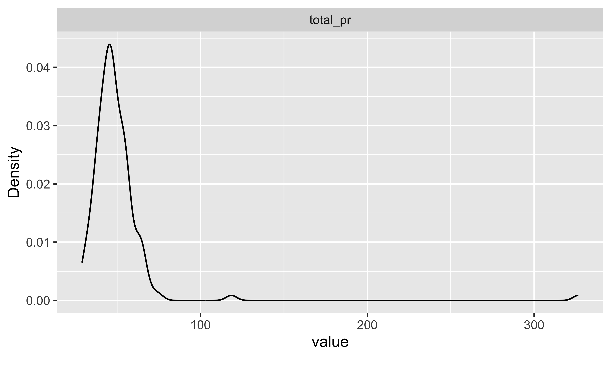
Die Syntax ist in Listing 6.3 abgedruckt10 . Übersetzen wir die Syntax ins Deutsche:
Nimm den Datensatz mariokart *und dann*
wähle die Spalte cond *und dann*
zeichne ein Balkendiagramm.Übungsaufgabe 6.2 (Spalten wählen für das Balkendiagramm) Hätten wir andere Spalten ausgewählt, so würde das Balkendiagramm die Verteilung jener Variablen zeigen. Ja, Sie können auch mehrere Variablen auf einmal auswählen. Probieren Sie das doch mal aus!
Übungsaufgabe 6.3
Visualisieren Sie die Verteilung von stock_photo!
mariokart |>
select(stock_photo) |>
plot_bar()
6.4.2 Verteilung: quantitative Variable
6.4.2.1 Histogramm
Bei einer quantitativen Variablen mit vielen Ausprägungen wäre ein Balkendiagramm nicht so aussagekräftig, s. Abbildung 6.6 (links). Es gibt einfach zu viele Ausprägungen.
Die Lösung: Wir reduzieren die Anzahl der Ausprägungen, in dem wir auf ganze Dollar runden. Oder, um noch weniger Ausprägungen zu bekommen, können wir einfach Gruppen definieren, z.B.
- Gruppe 1: 0-5 Dollar
- Gruppe 2: 6-10 Dollar
- Gruppe 2: 11-15 Dollar …
In Abbildung 6.6 (rechts) sind z.B. die Ausprägungen des Verkaufspreis (total_pr) in in Gruppen der Breite von 5 Dollar aufgeteilt worden. Zusätzlich sind noch die einzelnen Werte als schwarze Punkte gezeigt.

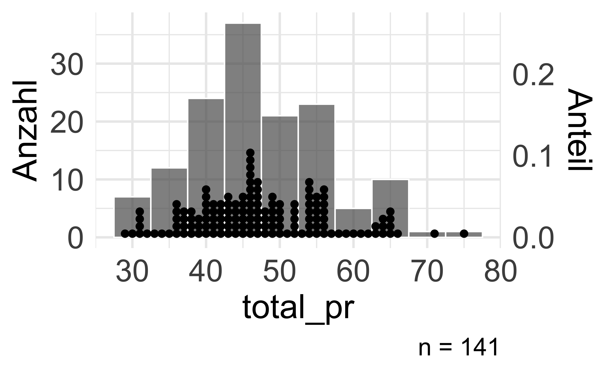
total_pr)
Definition 6.3 (Histogramm) Ein Histogramm ist ein Diagramm zur Darstellung der Häufigkeitsverteilung einer quantitativen Variablen. Die Daten werden in Gruppen (Klassen) eingeteilt, die dann durch einen Balken (pro Klasse) dargestellt sind. Die Höhe der Balken zeigt die Häufigkeit der Daten in dieser Gruppe/in diesem Balken11.
Es gibt keine klare Regel, in wie viele Balken ein Histogramm gegliedert sein sollte. Nur: Es sollten nicht sehr viele und nicht sehr wenig sein, s. Abbildung 6.7 links bzw. Abbildung 6.7, rechts.
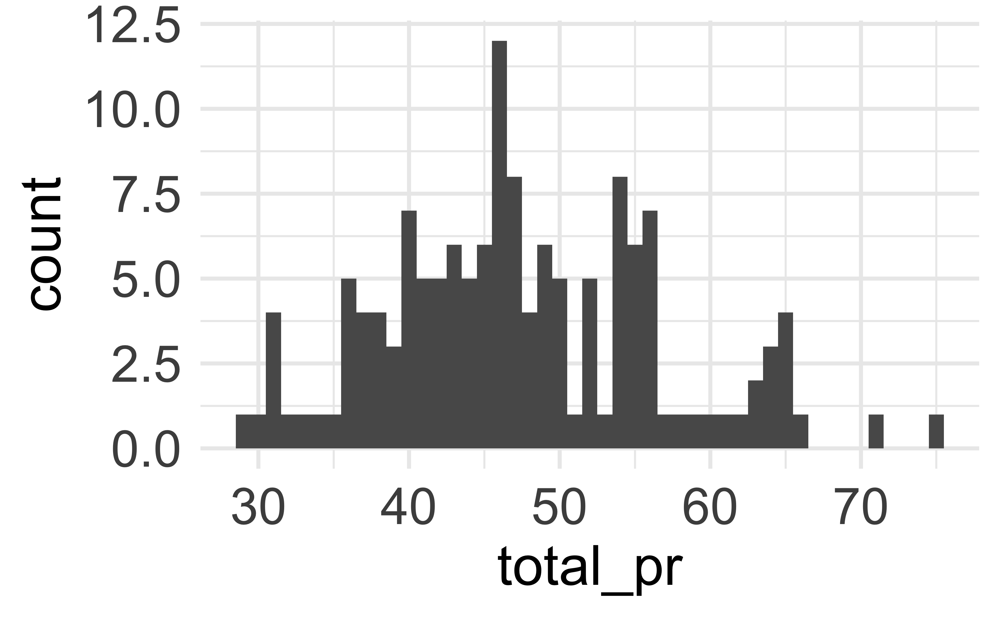
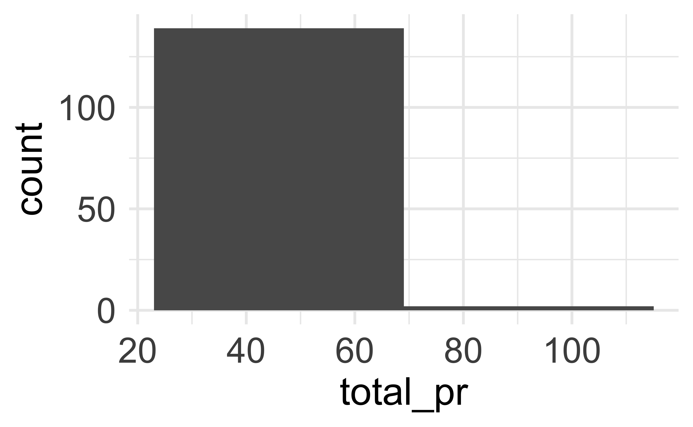
Zur Erstellung eines Histogramms können Sie die Syntax Listing 6.4 nützen, vgl. Abbildung 6.8, links.
mariokart %>%
select(total_pr) %>%
filter(total_pr < 100) %>% # ohne Extremwerte
plot_histogram()

Übungsaufgabe 6.4
Visualisieren Sie die Verteilung von ship_pr anhand eines Histogramms!
mariokart |>
select(ship_pr) |>
plot_histogram()
6.4.2.2 Dichtediagramm
Abbildung 6.9 fügt zu ?fig-balken-total-pr-hist ein Dichtediagramm hinzu (rote Linie). Ein Dichtediagramm ähnelt einem “glattgeschmirgeltem” Histogramm.
Definition 6.4 (Dichtediagramm) Ein Dichtediagramm visualisiert die Verteilung einer stetigen Variablen. Im Gegensatz zum Histogramm wird der Verlauf der Kurve geglättet, so kann Rauschen (Zufallsschwankung) besser ausgeblendet werden.12

total_pr
Übungsaufgabe 6.5 Erstellen Sie das Diagramm Abbildung 6.8, rechtes Teildiagramm!13\(\square\)
6.4.2.3 Eigenschaften von Verteilungen
Verteilungen unterscheiden sich z.B. einerseits in ihrem “typischen” oder “mittleren” Wert14 und anderseits in ihrer Streuung15
(Diagramme von) Verteilungen können symmetrisch oder schief (nicht symmetrisch) sein, s. Abbildung 6.10.
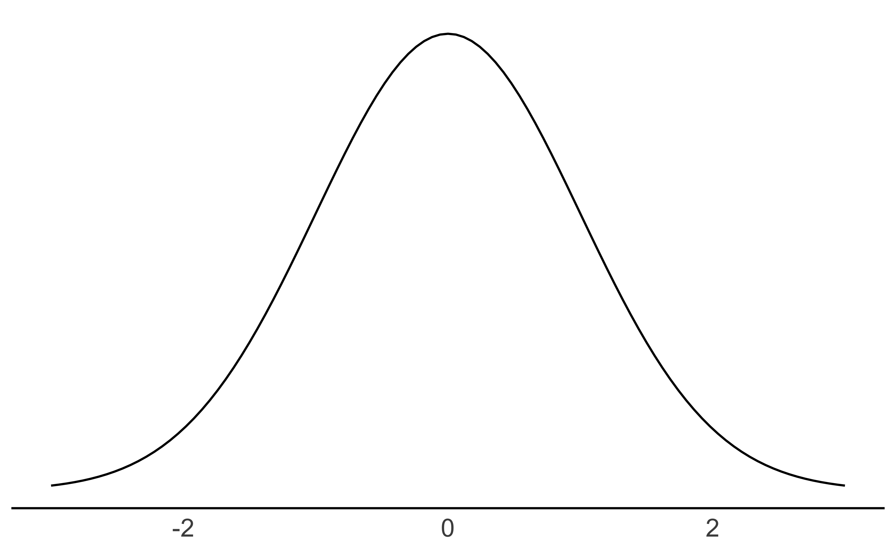

Abbildung 6.11 zeigt verschiedene Formen von Verteilungen. “Bimodal” meint “zweigipflig” und “multimodal” entsprechend “mehrgipflig”.16

Übungsaufgabe 6.6
Bennenen Sie die am besten passende Verteilungsform für die Variable total_pr.
Die Verteilung ist rechtschief.
mariokart |>
select(total_pr) |>
plot_density()6.4.3 Normalverteilung
Eine Normalverteilung ist eine bestimmte Art von Verteilung einer quantitativen Variablen. Aber sie ist besonders wichtig, und ist daher hier herausgestellt.
Eine Normalverteilung sehen Sie in Abbildung 6.10, links. Sie hat u.a. folgende Eigenschaften:
- symmetrisch
- glockenförmig
- stetig
- eingipflig (unimodal)
- Mittelwert, Median und Modus sind identisch
Beispiel 6.3 Beispiele für normalverteilte Variablen sind Körpergröße von Männern oder Frauen, IQ-Werte, Prüfungsergebnisse, Messfehler, Lebensdauer von Glühbirnen, Gewichte von Brotlaiben, Milchproduktion von Kühen, Brustumfang schottischer Soldaten (Lyon 2014).\(\square\)
Die Normalverteilung ist von hoher Bedeutung, da sich diese Verteilung unter (recht häufigen) Bedingungen zwangsläufig ergeben muss.
Definition 6.5 (Entstehung einer Normalverteilung) Wenn sich eine Variable \(X\) als Summe mehrerer, unabhängiger, etwa gleich starker Summanden, dann kann man erwarten, dass sich diese Variable \(X\) tendenziell normalverteilt. \(\square\)
Dieses Phänomen kann man gut anhand des Galton-Bretts veranschaulichen.
Parameter der Normalverteilung
Eine Normalverteilung lässt sich exakt beschreiben anhand zweier Parameter: ihres zentralen Werts (Mittelwerts), \(\mu\), und ihrer Streuung (Standardabweichung), \(\sigma\). \(\square\)
Abbildung 6.12 zeigt interaktive Beispiele für Normalverteilung. Wählen Sie einfach Mittelwert (\(\mu\)) und Streuung (\(\sigma\)) anhand der Schieberegler.17
Kennt man diese beiden Parameter, so kann man einfach angeben, welcher Anteil der Fläche sich in einem bestimmten Bereich befindet, s. Abbildung 6.13.18
Davon leitet sich die “68-95-99-Prozentregel” ab:
- \(68\,\%\) der Werte im Bereich \(\mu\pm 1 \cdot \sigma\)
- \(95\,\%\) der Werte im Bereich \(\mu\pm 2 \cdot \sigma\)
- \(99{,}7\,\%\) der Werte im Bereich \(\mu\pm 3 \cdot \sigma\)

6.5 Zusammenhänge verbildlichen
6.5.1 Zusammenhang: nominale Variablen
Beispiel 6.4 (Beispiele für Zusammenhänge bei nominalen Variablen)
- Hängt Berufserfolg (Führungskraft ja/nein) mit dem Geschlecht zusammen?
- Hängt der Beruf des Vaters mit dem Schulabschluss des Kindes (Abitur, Realschule, Mittelschule) zusammen?
- Gibt es einen Zusammenhang zwischen Automarke und politische Präferenz einer Partei? \(\square\)
Sagen wir, Sie arbeiten immer noch beim Online-Auktionshaus und Sie fragen sich, ob ein Produktfoto wohl primär bei neuwertigen Produkten beiliegt, aber nicht bei gebrauchten? Dazu betrachten Sie wieder die mariokart-Daten, s. Abbildung 6.14.
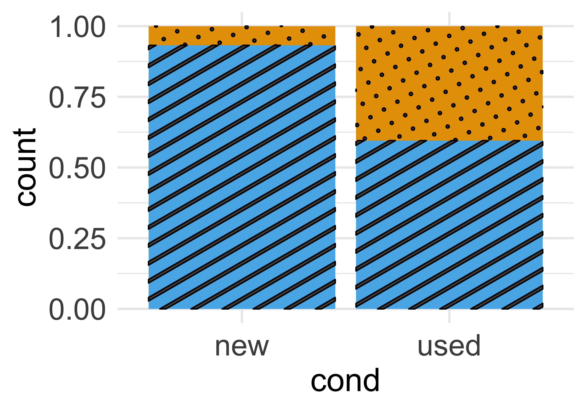

wheel und Foto in den Daten
Tatsächlich: Es findet sich ein Zusammenhang zwischen der Tatsache, ob dem versteigerten Produkt ein Foto bei lag und ob es neuwertig oder gebraucht war (Abbildung 6.14, links). Bei neuen Spielen war fast immer (ca. 90%) ein Foto dabei; bei gebrauchten Spielen immerhin bei gut der Hälfte der Fälle.
Anders sieht es aus für die Frage, ob ein (oder mehrere) Lenkräder dem Spiel beilagen (oder nicht) in Zusammenhang mit der Fotofrage Hier gab es fast keinen Unterschied zwischen neuen und alten Spielen, was die Frage nach “Foto des Produkts dabei” betraf (Abbildung 6.14, rechts), der Anteil betrug jeweils ca. 70%. Das zeigt, dass es keinen Zusammenhang zwischen Foto und Neuwertigkeit des Spiels gibt (laut unseren Daten).
Anders gesagt: Unterscheiden sich die “Füllhöhe” in den Diagrammen, so gibt es einen Unterschied hinsichtlich “Foto ist dabei” zwischen den beiden Gruppen (linker vs. rechter Balken). Unterscheiden sich die Anteile in den Gruppen (neuwertige vs. gebrauchte Spiele), so spielt z.B. die Variable “Foto dabei” offenbar eine Rolle. Dann hängen Neuwertigkeit und “Foto dabei” also zusammen!
So können Sie sich in R ein gefülltes Balkendiagramm ausgeben lassen, s. Abbildung 6.15. Diese Darstellung eignet sich, um Zusammenhänge zwischen zwei zweistufigen nominal skalierten Variablen zu verbildlichen. Die verschiedenen Werte der Füllfarbe werden den Stufen der Variablen cond zugewiesen, s. Listing 6.5.
mariokart %>%
select(cond, stock_photo) %>%
plot_bar(by = "cond") # aus dem Paket DataExplorer
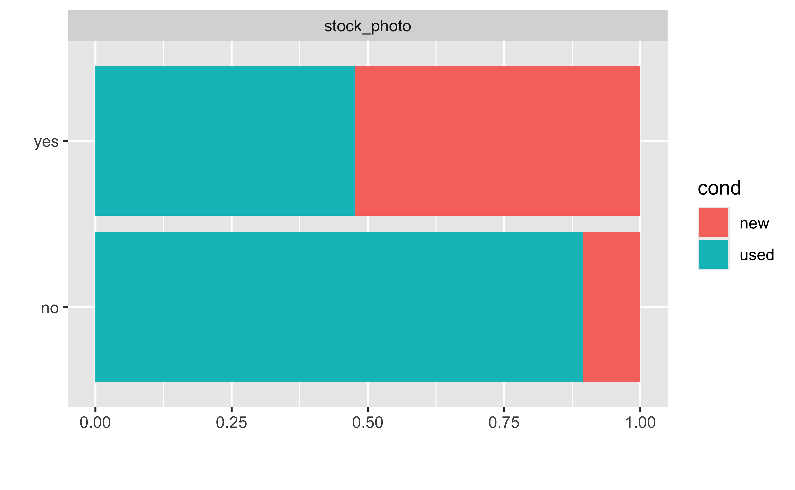
Hinweis
Gefüllte Balkendiagramme eignen sich zur Analyse eines Zusammenhangs zwischen nominalskalierten Variablen. Allerdings sollte eine der beiden Variablen nur zwei Ausprägungen aufweisen, sonst sind die Zusammenhänge nicht mehr so gut zu erkennen.\(\square\)
Übungsaufgabe 6.7
Visualisieren Sie den Zusammenhang der beiden nominalen Variablen cond und wheels!
wheels ist als metrische Variable (int: Integer, d.h. Ganzzahl) formatiert im Datensatz mariokart. Wir müssen Sie zunächst als Faktorvariable umformatieren, damit R sie als nominal skalierte Variable erkennt.
mariokart |>
# Mache aus einer metrischen eine nominale Variable:
mutate(wheels = factor(wheels)) |>
select(cond, wheels) |>
plot_bar(by = "cond")
6.5.2 Zusammenhang: metrisch
Den (etwaigen) Zusammenhang zweier metrischer Variablen kann man mit einem Streudiagramm visualisieren (engl. scatterplot). Abbildung 6.16 links untersucht den Zusammenhang des Einstiegpreises (X-Achse) und Abschlusspreises (Y-Achse) von Geboten bei Versteigerungen des Computerspiels Mariokart. In dem Diagramm ist eine “Trendgerade” (Regressionsgerade), um die Art des Zusammenhangs besser zu verdeutlichen. Die Trendgerade steigt an (von links nach recht). Daraus kann man schließen: Es handelt sich um einen gleichsinnigen (positiven) Zusammenhang: Je höher der Startpreis, desto höher der Abschlusspreis, zumindest tendenziell. Diese Gerade liegt “mittig” in den Daten (wir definieren dies später genauer). Diese Trendgerade gibt Aufschluss über “typische” Werte: Welcher Y-Wert ist “typisch” für einen bestimmten X-Wert?
Abbildung 6.16 rechts untersucht den Zusammenhang zwischen Anzahl der Gebote (X-Achse) und Abschlusspreises (Y-Achse). Es handelt sich um einen negativen Zusammenhang: Je mehr Gebote, desto geringer der Abschlusspreis. Das erkennt man an der sinkenden Trendgeraden.
Die Ellipse zeigt an, wie eng die Daten um die Trendgerade streuen. Daraus kann man ableiten, wie stark der Absolutwert des Zusammenhangs ist, vgl. Abbildung 6.18.

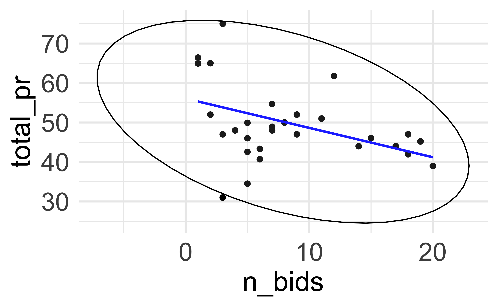
Definition 6.6 (Linearer Zusammenhang) Lässt sich die Beziehung zwischen zwei Variablen mit einer Gerade visualisieren, so spricht man von einem linearen Zusammenhang. Ändert man eine der beiden Variablen um einen bestimmten Wert (z.B. 1), so ändert sich die andere um einen proportionalen Wert (z.B. 0.5). \(\square\)
Natürlich könnte man auch nicht-lineare Zusammenhänge untersuchen, aber der Einfachheit halber konzentrieren wir uns hier mit linearen; Beispiele für nicht-lineare Zusammenhänge sind in Abbildung 6.17 zu sehen.
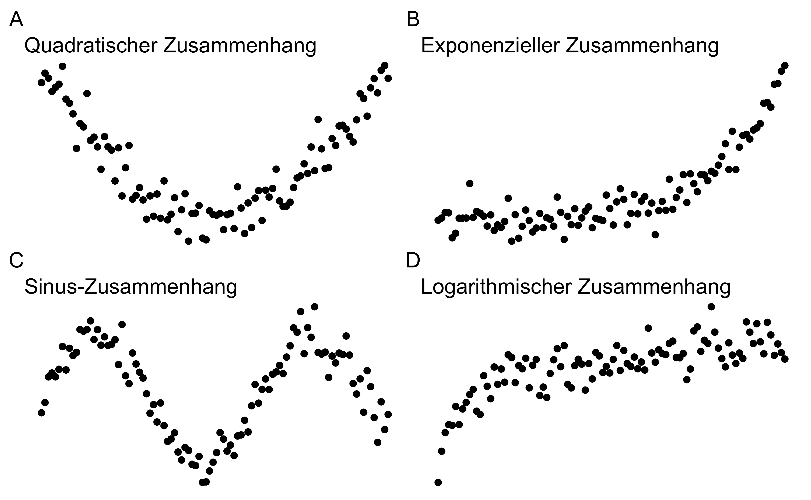
Definition 6.8 (Richtung und Stärke eines Zusammenhang) Gleichsinnige (positive) Zusammenhänge erkennt man an aufsteigenden Trendgeraden \(\nearrow\); gegensinnige (negative) Zusammenhänge an absteigenden Trendgeraden \(\searrow\).
Starke Zusammenh√§nge erkennt man an schmalen Ellipsen (‚ÄúBaguette‚Äù ü•ñ); schwache Zusammenh√§nge an breiten Ellipsen (‚ÄúTorte‚Äù [ü•Æ] {.content-visible when-format=‚Äúhtml‚Äù})
Abbildung 6.18 bietet einen Überblick über verschiedene Beispiele von Richtung und Stärke von Zusammenhängen.19

In Abbildung 6.18 ist für jedes Teildiagramm eine Zahl angegeben: der Korrelationskoeffizient. Diese Statistik quantifiziert Richtung und Stärke des Zusammenhangs (mehr dazu in Kap. Kapitel 9). Ein positives Vorzeichen steht für einen positiven Zusammenhang, ein negatives Vorzeichen für einen negativen Zusammenhang. Der (Absolut-)Wert gibt die Stärke des linearen Zusammenhangs an (cohen_power_1992?):
- ±0: Kein Zusammenhang
- ±0.1: schwacher Zusammenhang
- ±0.3: mittlerer Zusammenhang
- ±0.5: starker Zusammenhang
- ±1: perfekter Zusammenhang
Abbildung 6.19 hat die gleiche Aussage, ist aber plakativer, indem Stärke (schwach, stark) und Richtung (positiv, negativ) gegenübergestellt sind.

Man sieht in Abbildung 6.18 und Abbildung 6.19, dass ein negativer Korrelationskoeffizient mit einer absinkenden Trendgerade20 (blaue Linie) einhergeht. Umgekehrt geht ein positiver Trend mit einer ansteigenden Trendgerade einher. Zweitens erkennt man, dass starke Zusammenhänge mit einer schmaler Ellipse einhergehen und schwache Zusammenhänge mit einer breiten Ellipse einhergehen.
Abbildung 6.20 zeigt interaktive Beispiele für (lineare) Zusammenhänge.21
Beispiel 6.5 Sie arbeiten nach wie vor bei einem Online-Auktionshaus, und manchmal gehört Datenanalyse zu Ihren Aufgaben. Daher interessiert Sie, ob welche Variablen mit dem Abschlusspreis (total_pr) im Datensatz mariokart zusammenhängen. Sie verbildlichen die Daten mit R, und zwar nutzen Sie das Paket DataExplorer. Starten Sie dieses Paket, s. Listing 6.2. Außerdem müssen wir noch die Daten importieren, falls noch nicht getan, s. Listing 6.1.
So, jetzt kann die eigentliche Arbeit losgehen. Da Sie sich nur auf metrische Variablen konzentrieren wollen, wählen Sie (mit select) nur diese Variablen aus. Dann weisen Sie R an, einen Scatterplot zu malen (plot_scatterplot) und zwar jeweils den Zusammenhang einer der gewählten Variablen mit dem Abschlusspreis (total_pr), da das die Variable ist, die Sie primär interessiert. Das Ergebnis sieht man in Abbildung 6.21 bzw. Listing 6.6.
mariokart %>%
select(duration, n_bids, start_pr,
ship_pr, total_pr,
seller_rate, wheels) %>%
plot_scatterplot(by = "total_pr")
Aha… Was sagt uns das Bild? Hm. Es scheint einige Extremwerte zu geben, die dafür sorgen, dass der Rest der Daten recht zusammengequetscht auf dem Bild erscheint. Vielleicht sollten Sie solche Extremwerte lieber entfernen? Sie entscheiden sich, nur Verkäufe mit einem Abschlusspreis von weniger als 100 Dollar anzuschauen (total_pr < 100). Das Ergebnis ist in Abbildung 6.22 zu sehen.
mariokart_no_extreme <-
mariokart %>%
filter(total_pr < 100)
mariokart_no_extreme %>%
select(duration, n_bids, start_pr,
ship_pr, total_pr,
seller_rate, wheels) %>%
plot_scatterplot(by = "total_pr")
Ohne Extremwerte schält sich ein deutlicheres Bild (Abbildung 6.22) hervor: Startpreis (start_pr) und Anzahl der Räder (wheels) scheinen am stärksten mit dem Abschlusspreis zusammenzuhängen.
Das Argument by = "total_pr" bei plot_scatterplot weist R an, als Y-Variable stets total_pr zu verwenden. Alle übrigen Variablen kommen jeweils einmal als X-Variable vor.\(\square\)
Übungsaufgabe 6.8
Visualisieren Sie den Zusammenhang der beiden metrischen Variablen start_pr und total_pr. Verwenden Sie den Datensatz ohne Extremwerte wie oben definiert.
mariokart_no_extreme |>
select(start_pr, total_pr) |>
plot_scatterplot(by = "total_pr")
6.6 Unterschiede verbildlichen
6.6.1 Unterschied: nominale Variablen
Gute Nachrichten: Für nominale Variablen bieten sich Balkendiagramme sowohl zur Darstellung von Zusammenhängen als auch von Unterschieden an. Genau genommen zeigt ja Abbildung 6.14 (links) den Unterschied zwischen neuen und gebrauchten Spielen hinsichtlich der Frage, ob Photos beiliegen. Und wie man in Abbildung 6.14 sieht, ist der Anteil der Spiele mit Foto bei den neuen Spielen höher als bei gebrauchten Spielen.22
6.6.2 Unterschied: quantitative Variablen
Eine typische Analysefrage ist, ob sich zwei Gruppen hinsichtlich einer metrischen Zielvariablen deutlich unterscheiden. Genauer gesagt untersucht man z.B. oft, ob sich die Mittelwerte der beiden Gruppen zwischen der Zielvariablen deutlich unterscheiden. Das hört sich abstrakt an? Am besten wir schauen uns einige Beispiele an, s. Abbildung 6.23.


Das linke Teildiagramm von Abbildung 6.23 zeigt das Histogramm von total_pr, getrennt für neue und gebrauchte Spiele, vgl. Abbildung 6.8. Das rechte Teildiagramm zeigt die gleichen Verteilungen, aber mit einer vereinfachten, groberen Darstellungsfrom, den Boxplot.23


Das linke Teildiagramm von Abbildung 6.24 zeigt den Unterschied in den Verteilungen von total_pr, einmal für die neuen Computerspiele (cond == new) und einmal für gebrauchte Spiele (cond == used).
Was ein “deutlicher”24 Zusammenhang ist, ist keine statistische, sondern inhaltliche Frage, die man mit Sachverstand zum Forschungsgegenstand beantworten muss.
Definition 6.7 (Boxplot) Der Boxplot ist eine Vereinfachung bzw. eine Zusammenfassung eines Histograms.25 Damit stellt der Boxplot auch eine Verteilung (einer metrischen Variablen) dar.\(\square\)
In Abbildung 6.25 sieht man die “Übersetzung” von Histogramm (oben) zu einem Boxplot (unten).
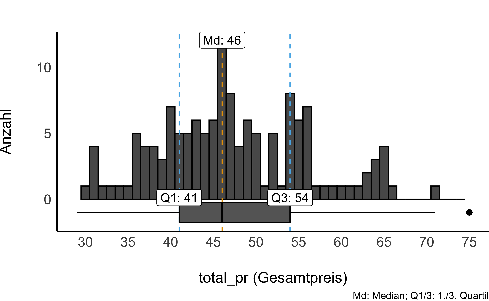
Schauen wir uns die “Anatomie” des Boxplots näher an:
- Der dicke Strich in der Box zeigt den Median der Verteilung, vgl. Kapitel 7.3.
- Die Enden der Box zeigen das 1. Quartil (41) bzw. das 3. Quartil (54). Damit zeigt die Breite der Box die Streuung der Verteilung an, genauer gesagt die Streuung der inneren 50% der Beobachtungen. Je breiter die Box, desto größer die Streuung. Die Breite der Box nennt man auch den Interquartilsabstand (IQR).
- Die “Antennen” des Boxplots zeigen die Streuung in den kleinsten 25% der Werte (linke Antenne) bzw. die Streuung der größten 25% der Werte (rechte Antennen). Je länger die Antenne, desto größer die Streuung.
- Falls es aber Extremwerte gibt, so sollten die lieber einzeln, separat, außerhalb der Antennen gezeigt werden. Daher ist die Antennenlänge auf die 1,5-fache Länge der Box beschränkt. Werte die außerhalb dieses Bereichs liegen (also mehr als das 1,5-fache der Boxlänge von Q3 entfernt sind) werden mittels eines Punktes dargestellt.
- Liegt der Median-Strich in der Mitte der Box, so ist die Verteilung symmetrisch (bezogen auf die inneren 50% der Werte), liegt der Median-Strich nicht in der Mitte der Box, so ist die Verteilung nicht symmetrisch (d.h. sie ist schief). Gleiches gilt für die Antennenlängen: Sind die Antennen gleich lang, so ist der äußere Teil der Verteilung symmetrisch, andernfalls schief.
Beispiel 6.6 In einer vorherigen Analyse haben Sie den Zusammenhang von Abschlusspreis und der Anzahl der Lenkräder untersucht. Jetzt möchten Sie eine sehr ähnliche Fragestellung betrachten: Wie unterscheiden sich die Verkaufspreise je nach Anzahl der beigelegten Lenkräder? Flink erstellen Sie dazu folgendes Diagramm, Abbildung 6.26, links. Es zeigt die Verteilung des Abschlusspreises, aufgebrochen nach Anzahl Lenkräder (by = "wheels). \(\square\)
Aber ganz glücklich sind Sie mit dem Diagramm nicht: R hat die Variable wheels komisch aufgeteilt. Es wäre eigentlich ganz einfach, wenn R die Gruppen 0, 1, 2, 3 und 4 aufteilen würde. Aber schaut man sich die Y-Achse (im linken Teildiagramm von Abbildung 6.26) an, so erkennt man, dass R wheels als stetige Zahl betrachtet und nicht in ganze Zahlen gruppiert.26 Aber wir möchten jeden einzelnen Wert von wheels (0, 1, 2, 3, 4) als Gruppe verstehen. Mit anderen Worten, wir möchten wheels als nominale Variable definieren. Das kann man mit dem Befehle factor(wheels) erreichen (verpackt in mutate), s. Abbildung 6.26 rechts.
mariokart_no_extreme %>%
select(total_pr, wheels) %>%
plot_boxplot(by = "wheels")
mariokart_no_extreme %>%
select(total_pr, wheels) %>%
mutate(wheels = factor(wheels)) %>%
plot_boxplot(by = "wheels")
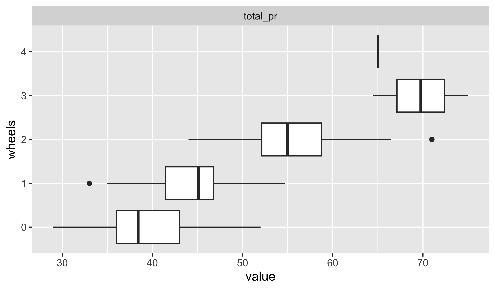
Sie schließen aus dem Bild, dass Lenkräder und Preis (positiv) zusammenhängen. Allerdings scheint es wenig Daten für wheels == 4 zu geben. Das prüfen Sie nach:
mariokart_no_extreme %>%
count(wheels)| wheels | n |
|---|---|
| 0 | 36 |
| 1 | 52 |
| 2 | 50 |
| 3 | 2 |
| 4 | 1 |
Tatsächlich gibt es (in mariokart_no_extreme) auch für 3 Lenkräder schon wenig Daten, so dass wir die Belastbarkeit dieses Ergebnisses skeptisch betrachten sollten.
Übrigens bezeichnet Sie Ihre Chefin nur noch als “Datengott”.
Beispiel 6.7
Visualisieren Sie den Unterschied im Verkaufspreis zwischen gebrauchten und neuen Spielen.
mariokart_no_extreme |>
select(cond, total_pr) |>
plot_boxplot(by = "cond")
Beispiel 6.8
Visualisieren Sie den Unterschied im Verkaufspreis abhängig von ship_pr; betrachten Sie ship_pr als ein Gruppierungsvariable. Interpretieren Sie das Ergebnis.
mariokart_no_extreme |>
select(ship_pr, total_pr) |>
plot_boxplot(by = "ship_pr")
plot_boxplot gruppiert metrische Variablen, wie ship_pr automatisch in fünf Gruppen (mit gleichen Ranges). Wir müssen also nichts tun, um die metrische Variable ship_pr in eine Gruppierungsvariable (Faktorvariable) umzuwandeln.
Es sieht so aus, als würde der Median zwischen den Gruppen leicht steigen, mit Ausnahme der mittleren Gruppe.
6.7 So lügt man mit Statistik
Diagramme werden häufig eingesetzt, um die Wahrheit “aufzuhübschen”.
6.7.1 Achsen manipulieren
Achsen zu stauchen ist ein einfacher Trick, s. Abbildung 6.27.


Natürlich kann man auch durch “Abschneiden” der Y-Achse einen eindrucksvollen Effekt erzielen, s. Abbildung 6.28.

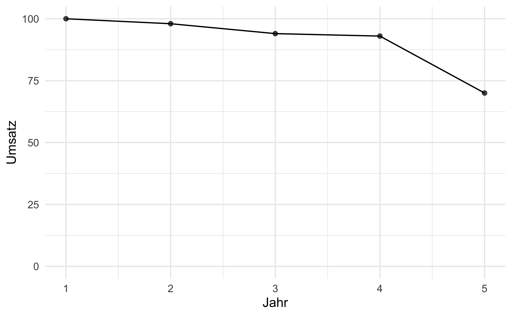
6.7.2 Scheinkorrelation
Messerli (2012) berichtet von einem Zusammenhang von Schokoladenkonsum und Anzahl von Nobelpreisen (Beobachtungseinheit: Länder), s. Abbildung 6.29. Das ist doch ganz klar: Schoki futtern macht schlau und Nobelpreise! (?)
Leider ist hier von einer Scheinkorrelation auszugehen: Auch wenn die beiden Variablen Schokoladenkonsum und Nobelpreise zusammenhängen, heißt das nicht, dass die Variable die Ursache und die andere die Wirkung sein muss. So könnte auch eine Drittvariable im Hintergrund die gleichzeitige Ursache von Schokoladenkonsum und Nobelpreise sein, etwa der allgemeine Entwicklungsstand des Landes: In höher entwickelten Ländern wird mehr Schokolade konsumiert und es werden mehr Nobelpreise gewonnen im Vergleich zu Ländern mit geringerem Entwicklungsstand.
6.8 Praxisbezug
Ein, wie ich finde schlagendes Beispiel zur Stärke von Datendiagrammen ist Abbildung 6.30. Das Diagramm zeigt die Häufigkeit von Masern, vor und nach der Einführung der Impfung. Die Daten und die Idee zur Visualisierung gehen auf (van_panhuis_contagious_2013?) zurück. Das Diagramm und weitere finden sich in ähnlicher Form im Wall Street Journal.

In der “freien Wildbahn” findet man häufig sog. “Tortendiagramme”. Zwar sind sie beliebt, doch ist von ihrer Verwendung zumeist abzuraten; vgl. auch hier.28
6.9 Vertiefung
Mehr Informationen zu {DataExplorer} finden Sie hier.
6.9.1 Animation
Eine weitere nützliche Art von Visualisierung sind Karten, 3D-Bilder und Animationen. So zeigt z.B. Abbildung 6.31 die Veränderung der Lebenserwartung (in Jahren) über die letzten Dekaden.29

In einigen Situation können Animationen zweckdienlich sein. Außerdem sind sie mitunter nett anzuschauen, s. Abbildung 6.32.

Weniger spektakulär als ?fig-3d-earth, aber näher an der Datenanalyse ist Abbildung 6.33.
Leider ist Abbildung 6.33 nicht sehr aufschlussreich.
Natürlich sind der Fantasie keine Grenzen beim Visualisieren gesetzt, so ist etwa diese Animationen ziemlich atemberaubend.30
6.9.2 Schicke Diagramme
Ein Teil der Diagramm dieses Kapitels wurden mit dem R-Paket ggpubr erstellt. Mit diesem Paket lassen sich einfach ansprechende Datendiagramme erstellen, so lautet die etwa die Syntax von Abbildung 6.24 wie folgt.
library(ggpubr) # einmalig instalieren nicht vergessen
mariokart %>%
filter(total_pr < 100) %>%
ggboxplot(x = "cond", y = "total_pr")Möchte man Mittelwerte vergleichen, so sind Boxplots nicht ideal, da diese ja nicht den Mittelwert, sondern den Median heraustellen. Eine Abhilfe (also eine Darstellung des Mittelwerts) schafft man (z.B.) mit ggpubr, s. Abbildung 6.34.
ggviolin(mariokart_no_extreme,
x = "cond",
y = "total_pr",
add = "mean_sd")
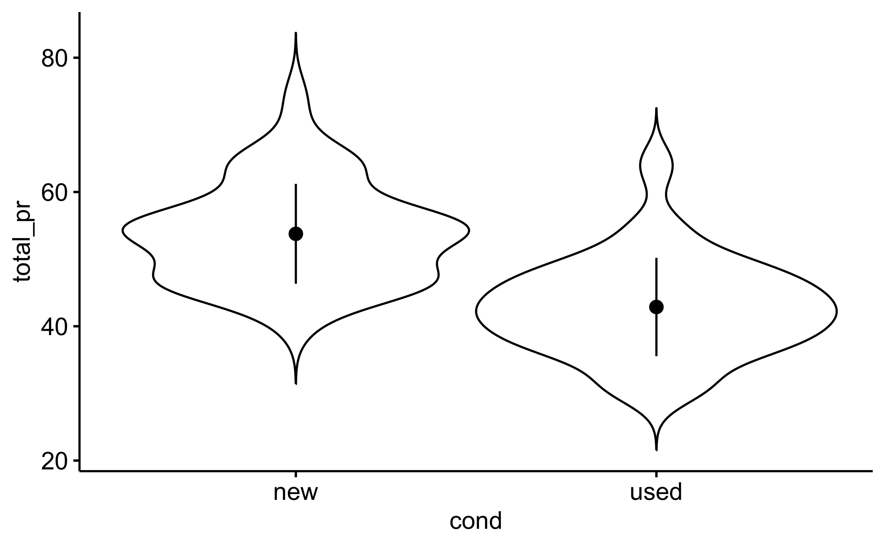
Ein “Violinenplot” hat die gleiche Aussage wie ein Dichtediagramm: Je breiter die “Violine”, desto mehr Beobachtungen gibt es an dieser Stelle. Weitere Varianten zum Violinenplot mit ggpubr finden sich hier.31
Übrigens sind Modelle – und Diagramme sind Modelle – immer eine Vereinfachung, lassen also Informationen weg. Manchmal auch wichtige Informationen. Dieses Beispiel zeigt, wie etwa Histogramme wichtige Informationen unter den Tisch fallen lassen.32
Ein weiteres R-Paket zur Erstellung ansprechender Datenvisualisierung heißt ggstatsplot.33
Abbildung 6.35 zeigt ein Histogramm, das mit ggstatsplot erstellt wurde.34
library(ggstatsplot)
gghistostats(
data = mariokart_no_extreme,
x = total_pr,
xlab = "Verkaufspreis"
# results.subtitle = FALSE # unterdrückt statist. Details
)
Die Menge der statistischen Kennzahlen bei ggstatsplot schindet ordentlich Eindruck. Möchte man auf die Kennzahlen verzichten, so nutzt man den Schalter results.subtitle = FALSE.^[Weitere Hinweise finden sich [auf der Hilfeseite der Funktion: https://indrajeetpatil.github.io/ggstatsplot/articles/web_only/gghistostats.html].
üë©‚Äçüè´ Ich w√ºrde gerne mal Beispiele von schlechten Datendiagrammen sehen.
üßë‚Äçüéì Auf der Seite von Flowingdata findet sich eine nette Liste mit schlechten Datendiagrammen.35
6.9.3 Farbwahl
Einige Überlegungen zur Farbwahl findet sich bei Wilke (2019), s. Kap. 4.36 Die Farbpalette von Okabe und Ito ist (vgl. ichihara_color_2008?) empfehlenswert, da sie auch bei Schwarz-Weiß-Druck und bei Sehschwächen die Farben noch recht gut unterscheiden lässt, s. Abbildung 6.36.
mariokart %>%
filter(total_pr < 100) %>%
ggboxplot(x = "cond", y = "total_pr", fill = "cond") +
scale_fill_okabeito()
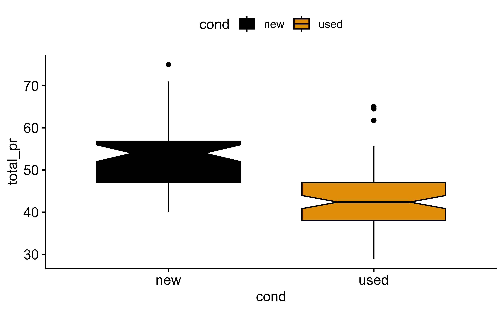
6.10 Aufgaben
Die Webseite datenwerk.netlify.app stellt eine Reihe von einschlägigen Übungsaufgaben bereit. Sie können die Suchfunktion der Webseite nutzen, um die Aufgaben mit den folgenden Namen zu suchen:
- boxhist
- max-corr1
- max-corr2
- Histogramm-in-Boxplot
- Diamonds-Histogramm-Vergleich2
- Boxplot-Aussagen
- boxplots-de1a
- movies-vis1
- movies-vis2
- vis-gapminder
- boxplots-de1a
- diamonds-histogramm-vergleich
- wozu-balkendiagramm
- diamonds-histogram
- n-vars-diagram
Noch mehr Aufgaben zum Thema Datenvisualisierung finden Sie im Datenwerk unter dem Tag vis.
6.11 Literaturhinweise
Sowohl ggpubr als auch DataExplorer (und viele andere R-Pakete) bauen auf dem R-Paket ggplot2 auf. ggplot2 ist eines der am weitesten ausgearbeiteten Softwarepakete zur Erstellung von Datendiagrammen. Das Buch zur Software (vom Autor von ggplot2) ist empfehlenswert (wickham_ggplot2_2009?). Eine neue, gute Einführung in Datenvisualisierung findet sich bei Wilke (2019). Beide Bücher sind kostenfrei online lesbar.
Wilke (2019) gibt einen hervorragenden Überblick über praktische Aspekte der Datenvisualisierung; gut geeignet, wenn man mit R arbeitet. In ähnlicher Richtung geht Fisher und Meyer (2018). Hier ist eine Liste von Büchern zum Thema; dort können Sie bei Interesse tiefer suchen.
6.12 Literatur
https://antworte.jetzt/↩︎
Quelle: https://towardsdatascience.com/how-to-turn-a-dinosaur-dataset-into-a-circle-dataset-with-the-same-statistics-64136c2e2ca0↩︎
Quelle: https://en.wikipedia.org/wiki/Anscombe%27s_quartet↩︎
Quelle: Paul Buffa, d3js, https://observablehq.com/@pstuffa/faux-3d-globe↩︎
Weitere Nomenklaturen sind möglich, aber wir halten hier die Sache einfach. Wer an Vertiefung interessiert ist, f indet bei data-to-vis einen Überblick über verschiedene Typen an Diagrammen, sogar in Form einer systematischen Nomenklatur: https://www.data-to-viz.com/.↩︎
synonym: Säulendiagramm↩︎
Natürlich müssen Sie das Paket einmalig installiert haben, bevor Sie es starten können.↩︎
Auf der Hilfeseite der Funktion finden Sie weitere Details zur Funktion.↩︎
Zur Erinnerung:
%>%nennt man die “Pfeife und lässt sich als”und dann” übersetzen, vgl. Kapitel 5.4.↩︎bei konstanter Balkenbreite↩︎
Mit Dichte ist die Anzahl der Beobachtungen pro Einheit der Variablen auf der X-Achse gemeint.↩︎
Grob gesagt:
mariokart %>% plot_density().↩︎vgl. Kapitel 7.5↩︎
vgl. Kapitel 8.4.↩︎
Quelle: ifes/FOM Hochschule, https://github.com/FOM-ifes/VL-Vorlesungsfolien↩︎
Quelle: https://observablehq.com/@mcmcclur/the-normal-model↩︎
Quelle: Ainali – Own work, CC BY-SA 3.0, https://commons.wikimedia.org/w/index.php?curid=3141713↩︎
Quelle: Aufbauend auf FOM/ifes, Autor: Norman Markgraf↩︎
synonym: Regressionsgerade↩︎
Aber Freunde lassen Freunde keine Tortendiagramme verwenden: https://github.com/cxli233/FriendsDontLetFriends#10-friends-dont-let-friends-make-pie-chart.↩︎
Übrigens: Freunde lassen Freunde nicht Balkendiagramme verwenden, um Mittelwerte darzustellen: https://github.com/cxli233/FriendsDontLetFriends#1-friends-dont-let-friends-make-bar-plots-for-means-separation.↩︎
“substanzieller”, “bedeutsamer”, “relevanter” oder “(inhaltlich) signifikanter”↩︎
Ob der Boxplot horizontal oder vertikal steht, ist Ihrem Geschmack überlassen.↩︎
Vielleicht so, dass in jeder Gruppe gleich viele Wert sind?↩︎
Datenquelle: https://www.tycho.pitt.edu↩︎
https://www.data-to-viz.com/caveat/pie.html; https://github.com/cxli233/FriendsDontLetFriends#10-friends-dont-let-friends-make-pie-chart↩︎
Der Quellcode der Animation ist hier zu finden: https://gist.github.com/rafapereirabr/0d68f7ccfc3af1680c4c8353cf9ab345.↩︎
https://www.tylermw.com/wp-content/uploads/2019/06/featuredmeasles.mp4↩︎
https://rpkgs.datanovia.com/ggpubr/reference/ggviolin.html↩︎
https://www.autodesk.com/research/publications/same-stats-different-graphs↩︎
https://github.com/IndrajeetPatil/ggstatsplot/blob/main/README.md↩︎
https://github.com/IndrajeetPatil/ggstatsplot/blob/main/README.md#gghistostats↩︎
https://flowingdata.com/category/visualization/ugly-visualization/↩︎
Siehe auch: https://data-se.netlify.app/2023/06/30/farbpaletten/↩︎